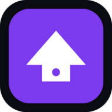
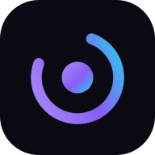
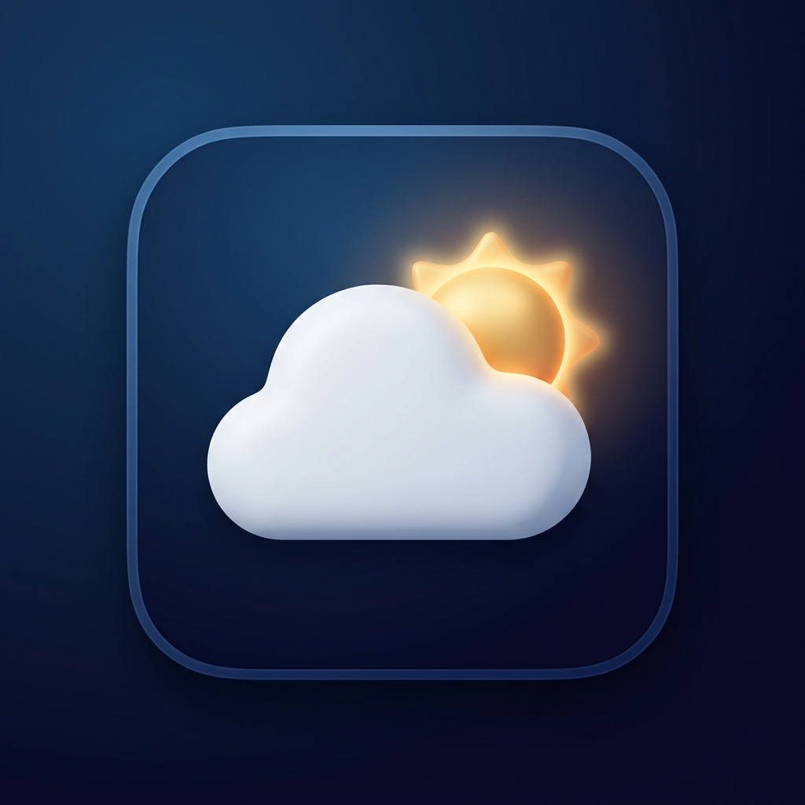

Aura Home
Pagos, tareas, calendario, documentos y todo lo del hogar.

Aura Music
Tu biblioteca local, con playlists y letras. Y en la nube.

AuraWeather
El clima de tu zona, claro y al momento.
Apps para el día a día. Funcionan sin conexión, sin cuentas y sin anuncios.

Pagos, tareas, calendario, documentos y todo lo del hogar.

Tu biblioteca local, con playlists y letras. Y en la nube.

El clima de tu zona, claro y al momento.